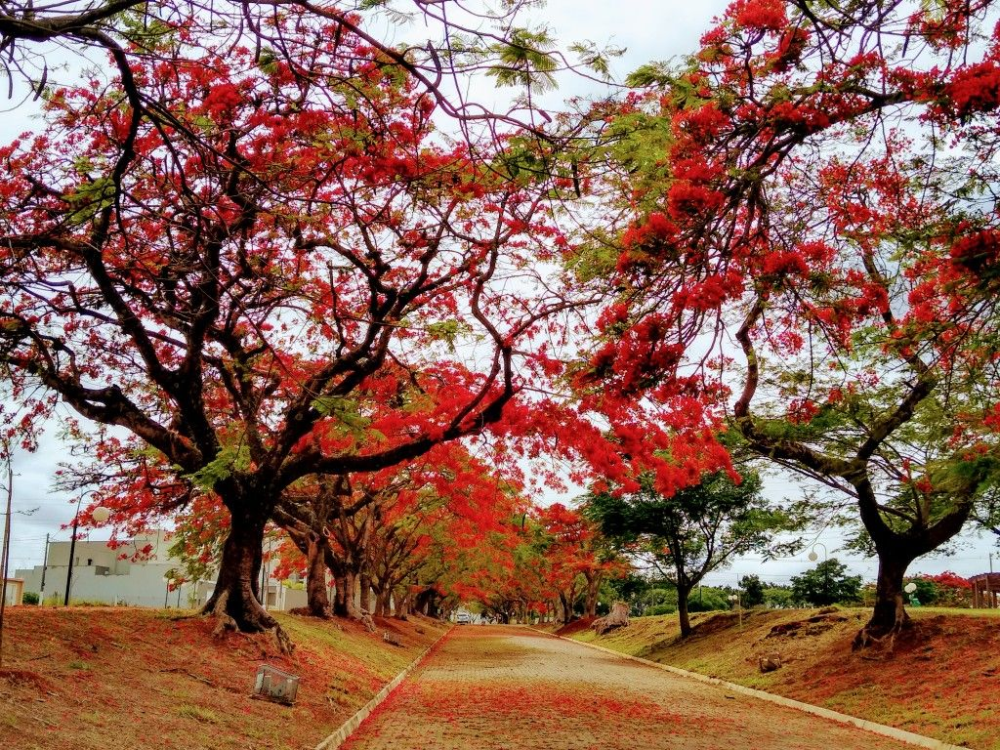

O que eu mais gosto em Santa Barbara D' Oeste
Comer no Rancho da Costela!

Um restaurante tipico de fazenda. Além da consagrada costela "Mais Caminhos", ofertam deliciosos pratos, sobremesas, café premium e chopp de qualidade. Tudo isso em um abiente campestre, sereno e acolhedor. Em atividade desde 1996.
Conheça mais sobre visitando o site.
Fazer um piquenique no parque dos ipés

tanto no fim de tarde quanto aos fins de semana o parque dos ipé é sempre um bom local para passar tempo com a familia.
descubra mais sobre o parque dos ipé no site.
Caminhar no caminho dos flamboyants
Se exercita é sempre algo recomendavel, ainda mais se for em um local agradavel e perto da natureza.
veja no mapa onde fica esse local.
E existem muitos outros lugares interessantes na cidade...
- O Bar Dona Beleza.
- Cemitério dos Americanos.
- A igreja matriz.
- O Teatro municipal Manoel Lyra.
- O parque dos Jacarandás
Um guia para você turistar em SBO! 💖 🍖